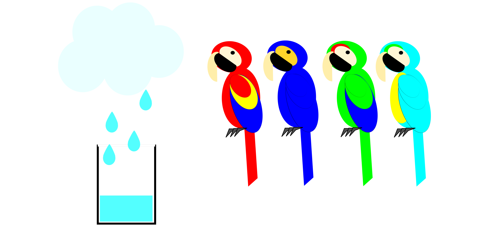
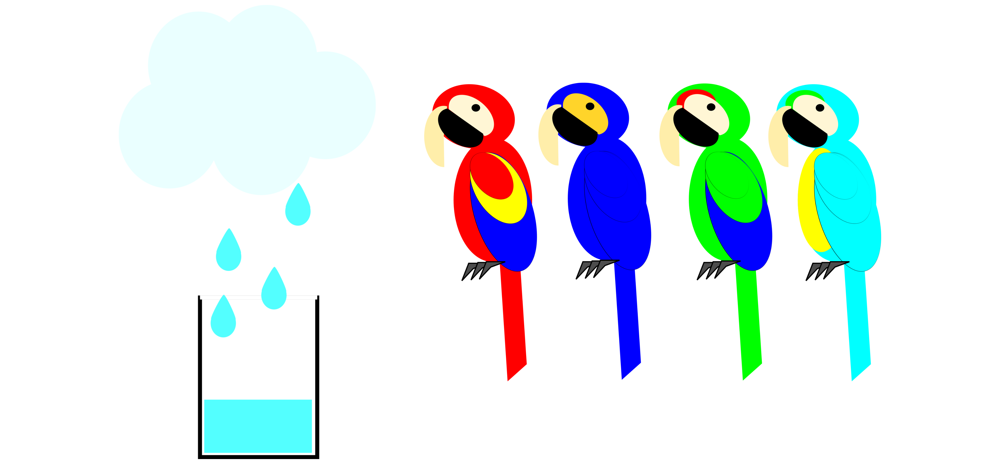
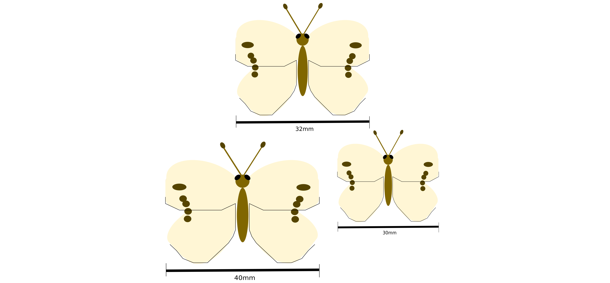
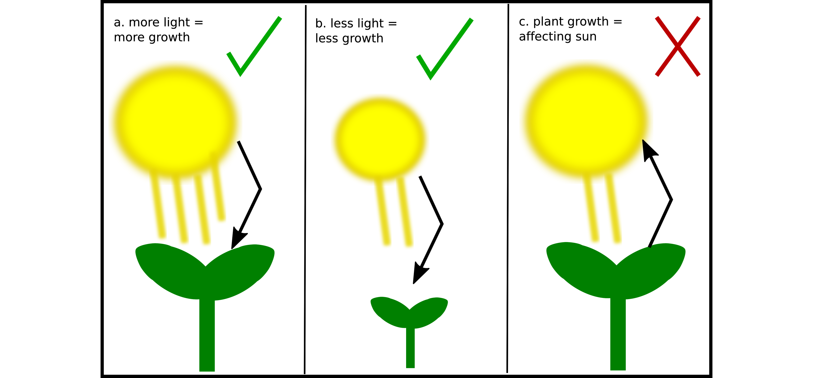
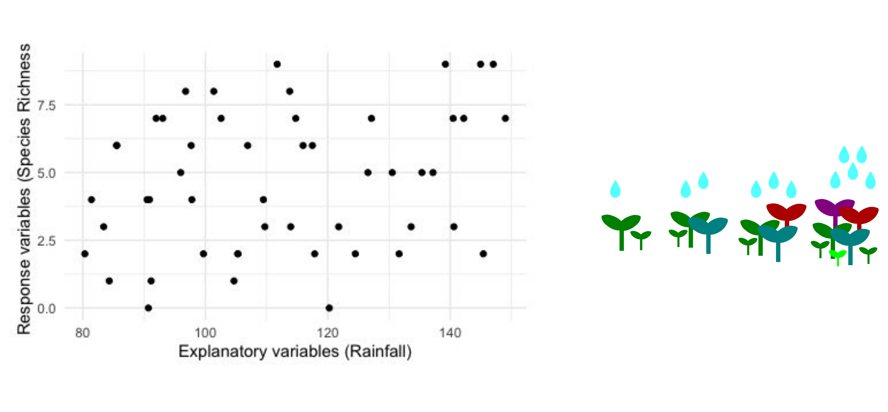
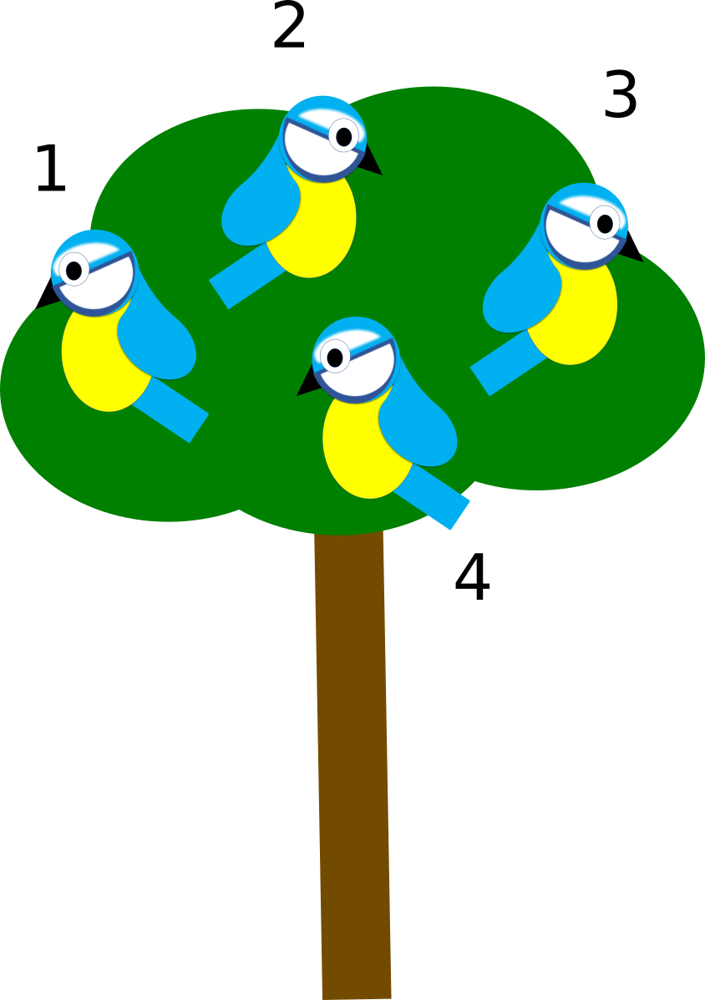

3 Types of data
3.1 Introduction
A datum is a piece of information, typically collected in the form of a numerical measurement or characteristic. Multiple of these are called data.
This is a very broad definition and can cover nearly anything you can collect. In science, especially the field of biology, we collect a lot of data.
Different biological studies collect data in different ways. Measuring the growth of bacteria in a lab is not the same as counting moose in a forest, and measuring rainfall through the year is not the same as recording the colour of parrots. These differences in data collection lead to differences in the way the data should be analysed and interpreted.

3.2 Variables
Variables are characteristics or measurements that differ between individuals in the population, some examples are wing span, eye colour, and seed size. In almost all instances, it is only possible to measure a subset of a population. The subset is our sample and we measure individuals in this sample. For example, measuring wing length in all cabbage butterflies (Pieris rapae, Figure 3) that have ever existed would be impossible but you could measure all butterflies caught on a farm over several years (for more information on populations and samples go to: (Chapter 2).

Variables show variation in the population and are defined at the population level, even if they are only measured for a sample. Estimated quantities, such as averages (see Descriptive statistics) can also be variables, even though they are not measured directly, as long as they show variation between individuals in the defined population.
Data we use in biology are measurements of variables. A dataset is a collection of multiple variables.
Variable can be categorised into two key groups; response and explanatory variables. The distinction between these variables types is important for analysis but is not always straightforward.
3.2.1 Response variable ( (Y) )
A response is an assumed consequence and the result we seek to make conclusions about. The response variable is the variable we assume to be a consequence of the processes we are studying for example we could assume that plant growth is a response to light it receives, the other way around does not make sense. (Of course in some cases a larger plant might prevent its own leaves receiving light, but it will not affect how much the sun produces). The response variable is often the focus of a biological question in a study or experiment, it is what we want to explain. In most mathematical definitions, it is represented by the letter Y and it can also be known as the dependent variable.

3.3 Explanatory variable ( (X) )
This is a variable that is used to explain the variation in the response variable. We assume that this variable has an effect on the response, but we cannot prove causality. The explanatory variable would be light in the plant-light example in Figure 4. In most mathematical definitions, it is represented as X. They are also referred to as independent variables or covariates.
Example: Consider a study of the species richness in Trondheim. The researcher wants to know:
Does local weather influence the number of species found in Trondheim?
To do this the researcher collects data on weather. They count the number of species and collect rainfall at several locations in Trondheim.
In this scenario:
The response variable is species richness
The explanatory variable are rainfall (mm)

3.4 Types of data
There are many ways to categorise data types. Here, we start with a division into qualitative (denoted categorical) and quantitative (denoted numerical). Each data type has its own characteristics which determine how it should be treated statistically and how statistical results should be interpreted. Characteristics of data are defined by the population we are trying to study, not the sample we have taken.
3.4.1 Categorical data
In this data type, individuals in the population can be placed in categories (groups) that do not have magnitude on a numerical scale. Categorical data can also be called attributes, factors, or qualitative variables. There are two forms of categorical data, ordinal and nominal data.
Nominal data have groups that do not have any order. The order of the groups does not change their meaning.
Examples of nominal data: gender (male and female), colour of cars

Ordinal data have groups that do have any order. In this case, the order of the groups has meaning.
Examples of ordinal data: Spice scale (mild, medium, hot) …. it can be dangerous to get these mixed up!

Binary data are a special case of categorical data where there are only two groups representing success (1) and failure (0).
Example of binary data: survival, where surviving = 1 and dying = 0
3.4.2 Numerical data
These data are quantitative measurements of individuals that do have a numerical magnitude. There is a difference between quantities which are counted and those that are measured. Numerical data can be further split into discrete and continuous data.
Discrete numerical data are finite or countable and take a number of levels. They can only take certain values, they are non-negative integers (whole numbers). Some values are physically impossible for discrete data, such as 1.5 elephants or -2 elephants.
Example of discrete data: The number of birds in a tree in Gløshaugen. The number of birds must always be a non-negative integer, you cannot have 0.25 birds or a negative number of birds.

Continuous numerical data can take an infinite number of possible values within certain ranges.
Examples of continuous numerical data: Temperature, rainfall, lengths, distances and many more.

Continuous numerical data has one further consideration, which is the scale of the data. There are two primary scales of numerical data, these are interval scale and ratio scale data. The scale of data can be important to consider when interpreting results from statistical analyses.
Interval scale data are continuous data without an absolute zero. They can have an arbitrary zero (e.g. Temperature in ºC), but it does not have an absolute meaning. Each unit in interval data has equal magnitude, and the units occur in an order. For instance, the difference from 1ºC to 2ºC is the same as the difference from 101ºC to 102ºC but not the same as 2ºC to 1ºC.
Examples of interval scale data: the pH of soil, degrees celsius (ºC), degrees Fahrenheit (ºF).
Ratio scale data do have an absolute zero. In this case zero means something, for instance durations, which cannot be negative. Each unit still has equal magnitude and occur in order.
Examples of ratio scale data: heart rate, distances (space), durations (time), degrees kelvin (ºK).